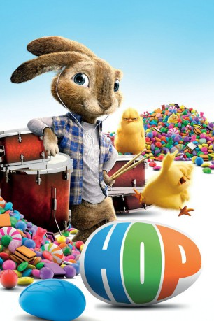

#849 Hop: Osterhase oder Superstar?
Alternativ: Hop
 
 IMDB-Wertung: 5.5 / 10
IMDB-Wertung: 5.5 / 10  Metascore: 41
Metascore: 41 
Fred ist arbeitslos und lebt seither eher planlos in den Tag hinein. Bei einer Spazierfahrt fährt er zufällig den Osterhasen an und nimmt sein Opfer mit zu sich nach Hause, um es dort wieder aufzupäppeln. Das ist leichter gesagt als getan, denn der Osterhase erweist sich als der albtraumhafteste Hausgast, den man sich nur vorstellen kann. Eine Reihe von Verwicklungen führt dazu, dass sich das ungleiche Paar nach und nach doch noch zusammenrauft.
Jahr: 2011
Dauer: 95 Minuten
FSK:
Land: USA Studio: Universal PicturesTonspuren:
Untertitel: Deutsch,
Auflösung: 720p (1280x688) Größe: 4474 MB
Genre: Animation/Trick, Abenteuer, Komödie, Familie, Fantasy
Regisseur: Tim Hill
Drehbuch: Cinco Paul, Ken Daurio, Brian Lynch, Cinco Paul, Ken Daurio
Soundtrack: Christopher Lennertz
Darsteller:
 James Marsden als Fred O'Hare
James Marsden als Fred O'Hare Russell Brand als E.B. / Production Assistant
Russell Brand als E.B. / Production Assistant Kaley Cuoco als Sam O'Hare
Kaley Cuoco als Sam O'Hare Hank Azaria als Carlos / Phil
Hank Azaria als Carlos / Phil Gary Cole als Henry O'Hare
Gary Cole als Henry O'Hare Elizabeth Perkins als Bonnie O'Hare
Elizabeth Perkins als Bonnie O'Hare Hugh Laurie als E.B.'s Dad
Hugh Laurie als E.B.'s Dad Tiffany Espensen als Alex O'Hare
Tiffany Espensen als Alex O'Hare David Hasselhoff als David Hasselhoff
David Hasselhoff als David Hasselhoff- Chelsea Handler als Mrs. Beck
 Dustin Ybarra als Cody
Dustin Ybarra als Cody Carlease Burke als Receptionist
Carlease Burke als Receptionist Veronica Alicino als Waitress
Veronica Alicino als Waitress- Django Marsh als Young E.B.
- Coleton Ray als Young Fred
- Cici Lau als Chinese Woman
 Jayden Lund als Another Parent
Jayden Lund als Another Parent Hugh M. Hefner als Voice at Playboy Mansion
Hugh M. Hefner als Voice at Playboy Mansion- Nick Drago als Dancer
- Rick Pasqualone als Utility Voice
- Shane Cambria als Kid , uncredited
 Chevy Lamont Cofield als Jeffrey , uncredited
Chevy Lamont Cofield als Jeffrey , uncredited- Tony Davis als Secretary , uncredited
- Cheryl Dent als Mountain Biker , uncredited
 Lubella Gauna als Fiddler , uncredited
Lubella Gauna als Fiddler , uncredited Hope Levy als Pink Beret , uncredited
Hope Levy als Pink Beret , uncredited- Zachary Alexander Rice als Kid Rabbit , uncredited
 Robbie Tucker als Kid#1 , uncredited
Robbie Tucker als Kid#1 , uncredited- Jilon VanOver als Hiker , uncredited
 Jimmy Carter als Blind Boys of Alabama
Jimmy Carter als Blind Boys of Alabama- Billy Bowers als Blind Boys of Alabama
- Benjamin Moore Jr. als Blind Boys of Alabama
- Eric McKinnie als Blind Boys of Alabama
- Joey Williams als Blind Boys of Alabama
- Tracy Pierce als Blind Boys of Alabama
- Will Cleveland Smith als Blind Boys of Alabama
 Greg Lewis als Performer
Greg Lewis als Performer- Mark Riccardi als Security Guard
- Christian Long als Production Assistant
 David Goldsmith als Warm-Up Guy
David Goldsmith als Warm-Up Guy- Andre Bauth als Carlos , uncredited
- Zachary Christopher Fay als Jock Kid , uncredited
- Prida Moreza als Easter School Pageant Attendee , uncredited
- Sophia Strauss als Kid , uncredited
Datei: X:\Kinder Filme (G-M)\Hop Osterhase oder Superstar (2011, FSK, 1280x688).mkv seit 31.03.2015
Festplatte: Kinder-Filme+Trick
 Es gibt insgesamt 84 Filme in der Gruppe 'Kinder Filme (G-M)'
Es gibt insgesamt 84 Filme in der Gruppe 'Kinder Filme (G-M)'